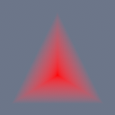

**Homework 5: Differentiable Triangle Soup**
Student name:
Sciper number:
Triangle Window Function (25 points)
====================================
Describe your implementation of `TriangleModel._window_function` in
`trianglesoup/rendering/triangle_model.py`, and briefly explain why we
need the window function here.
Validation
----------
Comparisons between your render (left) and the provided reference
(right) for each of the five single-triangle test cases. All cases
should pass `pixi run validate-part1`.
Copy the five student renders from `output/validation/part1/*.png`
into this folder so the sliders below can display them.
σ = 1, occ = 1

σ = 5, occ = 1
σ = 10, occ = 1
σ = 5, occ = 0.5
σ = 5, occ = 0.2
Forward Integrator: Alpha Compositing (30 points)
=================================================
Describe your implementation of the alpha-compositing loop in
`TriangleSoupEmissive.sample()`.
Validation
----------
`pixi run validate-part2` renders the reference cube from a corner
viewpoint. The per-pixel difference against the reference should be
negligible. Copy `output/validation/part2/corner.png` into this folder
so the slider below can display it.
Backward Pass: Path Replay Backpropagation (30 points)
======================================================
Describe your implementation of the PRB backward pass.
Validation
----------
`pixi run validate-part3` perturbs each differentiable parameter
(colours, occupancy, σ, vertex positions), backpropagates through your
integrator, and compares the resulting gradients and per-parameter
derivative images against pre-generated references.
Include below the derivative comparison figure produced by
`validate-part3` for at least one triangle of the cube (e.g.
triangle 11). The figure is saved as
`output/validation/part3/comparison_tri.png`; copy it into this
folder to embed.
Triangle Statistics (15 points)
===============================
`pixi run validate-part4` should report that pixel counts and average
contribution weights match the reference.
Reconstruction scenes
=====================
Run end-to-end reconstruction on each of the three datasets. Pick
the recipe that fits your machine; **either the full (CUDA) or the
CPU variant is accepted**:
~~~bash
# Full (CUDA) variants: best quality, need an NVIDIA GPU.
pixi run train-fox
pixi run train-macaw
pixi run train-lego
# CPU variants: ~5 minutes each on a multi-core CPU.
pixi run train-fox-cpu
pixi run train-macaw-cpu
pixi run train-lego-cpu
~~~
Each run writes a `progress_grid.png` to `output//`.
Copy that single image per scene into this folder and include it
below.
Fox:
Macaw:
Lego bulldozer:
Feedback
========
We would appreciate any comments or criticism to improve the projects
in future years; naturally, this part will not be graded. Examples
of useful information:
* How much time did you spend on the assignment? How was it divided
between designing, coding, and testing?
* What advice should we have given you before you started?
* What was hard or surprising about the assignment?
* What did you like or dislike? What else would you change?